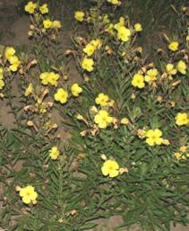
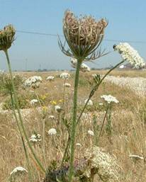
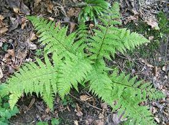
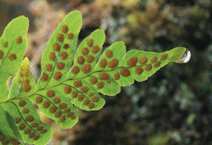

AGRO 304 :: Lecture 04 :: WEED BIOLOGY AND ECOLOGY

WEED BIOLOGY
Weed biology is the study of the establishment, growth, reproduction, and life cycles of weed species and weed societies/vegetation. Weed biology is an integrated science with the aim of minimizing the negative effects, as well as using and developing the positive effects, of weeds.
Life Cycle - Based on life cycle weeds are classified as annuals, biennials or perennials.
Annuals
Annuals complete their life cycle from seed in less than one year. There are two types: summer and winter annuals. Summer annuals germinate in the spring, mature, produce flowers and seeds and die before fall. Winter annuals germinate in the fall, overwinter in a seedling or rosette stage, mature, produce flowers and seeds, and die in the spring or early summer. Because of the seedling stage, annual weeds are generally easy to control. There are usually few annual weeds present in lowbush blueberry fields.
Biennials
Biennials generally complete their life cycle over two years. The first year the seeds germinate and form a basal cluster of leaves and a tap root. The plant overwinters in this stage. During the second year the weed produces a flower stalk, sets seed and dies. Examples of biennial weed are evening primrose and wild carrot.
 |
 |
Perennials
Perennial weeds live for more than two years. These weeds are the most common in blueberry fields and generally the most difficult to control. Perennial weeds may reproduce primarily by seed (daisy); by both seed and roots (sheep sorrel); or primarily be vegetative means (bunchberry). Many perennial weeds grow in the same manner as the blueberry plant. Therefore, many of the production practices that promote blueberry growth (e.g. pruning) also promote growth of these weeds. Perennials which are low growing and spread vegetatively by interconnected underground root systems are the most difficult to control. Perennial weeds growing above the blueberries may be controlled by wiping or spot treatments with registered herbicides. Perennial weeds include both woody and herbaceous species.
Growth Characters
Based on growth characters weeds are classified as grasses, broadleaf weeds, ferns and herbaceous or woody weeds.
Broadleaf
Broadleaf weeds are annual, biennial or perennial plants which generally have two leaves (cotyledons) emerging upon germination. The leaves normally have a branching network of veins and the flowers have distinct petals.
Grasses, Sedges and Rushes
Grasses can be annual or perennial plants. They generally have narrow, upright, parallel-veined leaves. Grasses have jointed stems, usually hollow at the internodes and are circular in cross section.
Sedges are a large group of perennial (rarely annual) grass-like plants which are common in wet, poorly drained soils. Sedge stems are triangular in cross section, solid, and not jointed.
Rushes are annual or perennial plants similar in appearance to sedges with grass-like tufted leaves common at the plant base. Rush stems are hollow, circular in cross section, and not jointed. Like the sedge, this plant is also common in wet areas or poorly drained soil, but is also found in woodland and open field
Ferns
Ferns are primitive perennial plants that do not produce flowers and seeds. Ferns consist of a leaf or frond, a stalk and an expanded blade which may then be further subdivided several times. Ferns spread by long creeping rhizomes and/or by spores.
Fern plant |
Fern spores |
Reproductive Strategy
Based on reproductive strategy weeds are classified as seed, vegetative reproduction.
Reproduction by seed
Reproduction by seed is called sexual reproduction. It requires the fertilization of an egg by sperm, usually in the form of pollen. Pollination of the egg in a flower results in seed that is capable of producing a new plant. Seed production varies greatly among and within weed species in part due to environmental variability between years, competition from neighboring plants, and genetic variability.
Through sexual reproduction abundant and small seeds are produced. Annual and biennial weeds depend on seed production, as the sole means of propagation and survival of perennial weeds are less dependent on this mechanism. For example, while Canada thistle has been observed to produce as few as 680 seeds per plant, curly dock often produces more than 30,000 seeds per plant.
The seed production capacity of some of the weeds is
Ontogeny |
Seeds/plant |
Name of weed/crop |
Seeds/plant |
Perennials |
16,629 |
Amaranthus retroflexus |
1,96,405 |
Biennials |
26,600 |
Solanum nigrum |
1,78,000 |
Annuals |
20,832 |
Chenopodium album |
72,000 |
|
|
Trianthema portulacastrum |
52,000 |
|
|
Wheat & Rice |
90 to 100 |
A few weeds may produce seed through apomixis i.e without fertilization. Eg. Ferns reproduce by spores.
Vegetative Reproduction
In vegetative (asexual) reproduction, a new plant develops from a vegetative organ such as a stem, root, or leaf. Several modifications of these organs are common in perennial weeds, such as underground stems (rhizomes), above-ground stems (stolons), bulbs, corms, and tubers. Although vegetative structures generally do not survive as long in the soil as do seeds, very small structures can result in a new plant. Vegetative reproduction can be as prolific as seed production.
Weed Ecology
Weed ecology is the study of the interaction or relationship between a weed and its environment (other living organisms as well as abiotic factors). Ecology is concerned with growth characteristics and adaptations that enable weeds to survive the change in the environment. Man plays an important role in changing the environment by altering the crop husbandry practices and by maintaining weed free monocrop or multicrop culture. For effective weed control, the study on both biology and ecology of a weed species are important.
The weed seedbank and seed dormancy
Not only can weed seed and vegetative tissue travel great distances to infest new fields, but once in the soil, weed seed can remain viable for many years. In any given location, the weed seedbank contains a vast library of weed species and ecotypes that are adapted to a great range of environmental conditions and are ready to germinate given the proper signal. A study reported that a square foot of soil, 6 inches deep, contained from 98 to 3,068 viable weed seeds. This represents between 4.3 million and 133 million viable seeds per acre.
The amount of time that a seed is capable of producing a seedling, or its viability, varies with weed species. In the extreme, lotus (Nelumbo nucifera) seeds found in a Manchurian lakebed were viable after 1,000 years. More commonly, the annual plant jimsonweed (Datura stramonium) has over a 90 percent germination rate after 40 years in the soil.
Additionally, many weed seeds remain dormant in the soil until the conditions for germination and survival are appropriate for that particular seed. Dormancy is the seed's resting stage and is the primary method of weed seed dispersal in time. Some weed seeds have seed coats that are impermeable to water and/or oxygen or are mechanically resistant. Others contain immature embryos or have a waiting period (called after-ripening) that must be completed before the seed will germinate. Seed dormancy is affected by environmental conditions, including temperature, light, oxygen, and the presence of chemical inhibitors.
Seed dormancy as survival mechanism
Weed seeds possess a variety of special germination mechanisms adapted to changes in temperature, moisture, aeration, exposure to light, depth of burial of seeds etc., when conditions are unfavourable for germination, they can remain dormant or delay germination.
Conditions favourable for weeds seed germination are
- Seeds of many weeds require an exposure to light for germination. This is regulated by bluish-green protein pigment called phytochrome.
- Many weed seeds germinate under aerobic conditions while some require anaerobic condition. Soil turnover during ploughing and other operations exposes the seeds to light and induces germination.
- Periodicity of germination is another specialised germination mechanism. Amaranths spp have a definite pattern of peaks of germination at regular intervals.
- Summer annuals favour higher temperature & winter annuals germinate at lower temperatures some weeds germinate freely throughout the year.
Seed Dormancy
Dormancy is a state of seeds and buds in which they are alive but not germinated. If all weed seeds were to germinate at one time, their seedlings could be destroyed. Dormancy allows storage of millions of weed seeds in soil and enables them to grow in flushes over years. In this context, the old gardeners saying “One year Seeding seven years Weeding” is very appropriate. In fact, weed seeds have been found viable even after 20-80 years of burial in soil. Weed seeds exhibit three types of dormancy.
PERSISTANCE OF WEEDS
Weeds are highly persistent* category of plants. They existed even before the first seed of any crop was planted on earth and they are with us even today, probably in larger number and with greater vigour. This speaks ample of their highly persistent nature. If a mixed growth of a crop and weeds is left to nature, soon there will be weeds all over, with no ttrace of the crop plants. High persistence of weeds results from their multifacet mechanisms. Important among these are:-
(і) Prolific Seed Production
Most weeds are prolific seed producers. For instance, the per plant seed production capacity of Cuscuta spp. Wasd found approximately 16,000; Conyza33,992; Chenopodium album, 72,000; and Amaranthus, 196,000. Only in few instances of some perennial weeds, the seed production was weak. Further, the immediate viability of weed seeds has been found to vary from 6 to 78%. Thus, one can anticipate that in majority of cases even if a few weedy plants escaped control measures in the field, they were sufficient to produce enough seeds to continue their progency for years to come. It is further interesting to note that weeds can set viable seeds even when they are harvested before full maturity. Perennial sowthistle (Sonchus arvensis) can set viable seeds even when it is cut during its flowering stage and kept in shade. Chickweed (Stellaria media) and purslane (Portulaca oleracea) have also been found well adapted to premature flowering and seed setting under adverse environment conditions. A wedy plant must produce some seeds before it perishes under any stress of nature, may it be drought, biotic pressure, disease or insect pest, etc. It is commonly observed that under favourable conditions Chenopodium album may grow as much as 30-50 cm tall before it flowers and sets seeds. But in the events of severe drought it may grow hardly 3 cm high, and still produce some seeds before it withers.
Period for Full and Partial maturity of Certain Weeds When They Can Be Harvested Without Loss of Their Seed Vitality
Weed species |
Period of full maturity after flowering (days) |
Minimun maturity period after flowering (days) |
Anagallis arvensis |
25 |
15 |
Argemone mexicana |
50 |
35 |
Asphodelus tenuifolius |
40 |
15 |
Lathyru aphaca |
35 |
15 |
Melilotus indica |
35 |
20 |
Solanum nigrum |
45 |
15 |
Vicia hirsuta |
30 |
15 |
(іі) Dormancy- of Weed Seeds and Other Propagules in Soil
As stated earlier, the majority of weed seeds lying below about 5 cm soil depth remain dormant, and act as source for future flushes of weeds. Permanent experiments laid out for up to 10 decades have shown that depending upon the weed species, the weed seeds retained viability for 2 to 100 years, to different levels. Perhaps, the oldest seed burial experiments were laid out in 1879 by late Dr. W. J. Beal in USA. The latest viability tests from these experiments were reported by Kiviban and Bavdurski (1973). Thus, the soils, both agricultural and otherwise, acted as “reserve banks” for the weed seeds and their other propagules. The phenomenon of dormancy and consequent longevity of weeds seeds in soils is a very important tool with weeds to ensure their everlasting existence against all odds of nature (and man). If all weed seeds present in the soil were to germinate at one time, a single tillage operation could wipe these out of the scene. But contrary to it, only a fraction of weed seeds present in any soil germinate at any ine time, leaving others to germinate later. Also, a few weedy plants which escaped attention in a field are often sufficient to recoup the seed banks in the soil. In this context, the old gardener’s saying. “One year seeding is seven year’s weeding”, still holds good.
Within the soil, weed seeds can remain dormant for three reasons, as follows:-
(a) Enforced dormancy
Enforced dormancy in weed seeds is due to their placement deeper than 5 cm, resulting usually from tillage of the field. Weed seeds under this kind of dormancy germinate readily whenever these are restored to the top 3 to 5 cm layer of soil by tillage, provided adequate soil moisture and congenial temperatures were available in this zone of the soil. Enforced dormancy is a non-specific character of the seeds and it is caused by the absence of red light (r) under the ground, which otherwise induces germination in seeds by activating their phytochrome system (P), comprising a responsive chromophore blue pigment attached to the protein molecule in seeds. Far-red light (fr) deactivates the system and thus induces dormancy in seeds.
far red
Pr <‑‑‑‑‑‑‑‑‑‑‑‑‑‑‑‑‑‑‑ Pfr
‑‑‑‑‑‑‑‑‑‑‑‑‑‑‑‑‑‑->
Red
Cultivation counters enforced dormancy by bringing the weeds to surface where they are exposed to full sun-light spectrum, besides better aeration. Higher soil temperature and NO3 content of surface soil may further help in breaking the enforced seed dormancy.
(b) Innate dormancy
Innate dormancy is a genetically controlled character and it is a feature of specific weed seeds. Innate dormant seeds will fail to germinate even if they were present in the top 3 to 5 cm soil and adequate soil moisture and temperature conditions were provided to them. Innate doemancy usually results for reasons of either hard seed coats, like in Setaria, Ipomoea, and Xanthium spp.,or immature embryos, as observed in Polygonum, Juncus, and Eleocharis spp. In certain weed seeds, particularly those of xerophytic origin, the presence of specific germination inhibitors is responsible for their innate dormancy. In nature the innate dormancy of weed seeds is overcome with either passage of time, or under the influence of some climatic pressure.
(c) Induced Dormancy
Induced dormancy results from some physiological change in otherwise non-dormant weed seeds under the impact of factors like a marked rise in soil temperature, increased CO2 content of the soil, low O2 pressures, water logging, etc. Certain weed seeds, like those of wild oat (Avena fatua), exhibit all the three kinds of dormancies.
(ііі) Vegetative Propagation
Many weeds are extremely persistent because of their ability to propagate by vegetative means. When the above ground parts of such weeds are destroyed, their deeply placed vegetative propagules put forth new shoots as soon as the external stresses are removed and favourable conditions revive. Even if some kind of deep tillage is employed in an attempt to destroy these, it will be a futile exercise since fragments of the weed propagules get easily dispersed to new areas where they initiate fresh colonies.
(іv) Rapid Dispersal
Dispersal is a very important means of persistence of weeds. It exposes them to different ecosystems so that each weed species can choose its most favourable environment and put up a hard struggle for existence in nature. Dispersal is the key factor in developing a persistent weed population for every possible niche in the environment. Dispersal aids persistence of weeds in proportion to the dispersal agents and adaptations available to them.
(v) Inherent Hardiness
To be widely successful a weed species must adapt itself to diverse environmental conditions. Weeds seem to possess some kind of built-in mechanism to survive against the vagaries of nature, like extreme cold, heat, drought, biotic stress, and soil abnormalities. This is inherent hardiness of weeds. It is hard to find weeds damaged under a night’s severe frost, or destroyed because of attack by some insect pest, disease organism, or nematode. Weeds are rarely seen to either develop chlorosis or any other mineral deficiency or toxicity symptoms, even though the soil may be actually abnormal in its mineral composition. Also, poor quality water declared unfit for irrigating crops, fails to injure weeds. In fact, in crop fields all abnormal features of soil and water help weeds to grow vigorously in spaces vacated by the stunted growth (or death) of the crop plants. The mechanisms involved in this inherent hardiness of weeds are not much known. Further, several weeds of tropical origin, e.g. Cyperus and Amaranthus spp., have the advantage of adopting C4 pathway of CO2 fixation, which is devoid of photorespiration. Several weeds have exceptionally high transpiration efficiency, low nutrient requirements, and slow rates of translocation of food and minerals. Such adaptations in weeds help them to persist in adverse weather conditions. High rates of elongation in certain weeds, particularly in the initial stages of growth, improve their competing ability and persistence. But a common aspect of inherent hardiness of all weeds seems to be their numerous generations of natural selection through climatic stresses in the struggle for survival of the fittest.
(vі) Evasiveness
Many a weed is capable of evading destruction by animals and man because of their bitter taste, disagreeable odour, spiny nature, and mimicry.
(vіі) Self Regeneration
Weeds are self-sown plants. They don’t require any artificial, friable seedbeds for their germination. Detached from the mother plants, weed seeds and other propagules germinate profusely on undisturbed soils whenever the environment is favourable for the purpose.
(vііі) Selective Invasion
Weed species differ widely in their soil and climatic requirements. But in the first instance, the weed flora composition depends upon the chance a particular weed had to reach a particular site. The nature then makes a critical selection out of the lot and allows only those weed seeds to germinate at a time which were most adapted to the environment prevailing then. The seeds of rest of the weed species wait in soil till the environment outside changes. At this stage, suddenly another set of weed species takes over the ground. The major environment factors which determine the weed species composition on the ground comprise the available soil moisture, soil pH, temperature, photoperiod, and solar energy. To cite some examples, in a typical dry farming situation the weed flora often comprises moisture hardy species like Tribulus terrestris, Argemone mexicana, Eragrostis cilianesis, Euphorbia hirta, Celosia argenta, and Heliotropium eichwaldii. When such fields are brought under irrigation, soon these weed species are replaced by the better moisture responsive weeds like Trianthema monogyna, Phalaris minor, Asphodellus tenuifolius, Malva parviflora, Commelina benghalensis, and Brachiaria ramose, depending upon the season. Further, if such fields are irrigated still more intensively and turned into paddy fields by ponding the water, there shall be another shift in weed species. In this situation weeds like Echinochloa, Caesulina, Butomus, and Eclipta spp. will dominate the scene. Likewise, weds in sugarbeet grow on salty soils are specific to such soils, for instance, Chenopodium murale, Salsola kali, Taraxacum officinale, Polygonum spp. and Distichalis stricta. Weed species also get specific to soil texture. For instance, Celosia argenta and Tribulus terrestris are dominant on sandy and light texture soils, but weeds like Trianthema monogyna and Amaranthus viridis infest heavy and fine texture soils. Weed species also differ with the microclimate offered by a particular crop. For instance, Coronopus didymus and Cichorium intybus prefer closely sown and frewquently irrigated crops like Lucerne and berseem, and they avoid open row crops like chickpea and mustard. Likewise, an early sown crop is likely to be infested with weed flora that is quite different from a timely or late sown crop in the same place. Climatic and seasonal changes in an environment also force rapid diversion in the weed flora towards the most adapted species. To sum up, weeds are able to dominate in every situation by choosing and putting forth the most befitting species. The mechanism of such an armour available to weeds seems to be a perfect, remote sensing system, leading to their observed persistence.
(іx) Weed Succession:
In nature, the individuals of a weed species often have chance to cross breed to variable levels. This leads to the development of a few plants of different genetic make-up, forming new races within a species. Such races of weeds are called agricultural ecotypes. When herbicides (or bioagents) are used continuously to destroy the “normal” races of a weed species, their newly developed ecotypes may sometimes prove tolerant to the herbicides used, whence they get chance to gradually expand in numbers, each season.
Such agricultural ecotypes are then called chemotypes. The chemotypes greatly aid a weed species to persist.
Weed succession can also occur amongst different weed species themselves in response to long term adoption of an agricultural practice, including the use of herbicides. This leads to the destruction of the susceptible group of weed species, leaving behind few plants of the resistant species to gradually build up their population and finally emerge as the dominant weed flora of the area. In India, several example3 of this kind have been recorded in recent years. Singh et al (1993) reported that in the Punjab, in wheat fields, population of Avena fatua
‘wild oat’ was on increase because of several years’ herbicidal control of Phalaris minor. Likewise, in paddy fields,the continuous use of butachlor has led to increase in the tolerant weed, Ischaemum regosum, wrinkle grass’. In Tamil Nadu, the repeated use of butachlor in paddy fields has led to increase in Cyperus rotundus, ‘nut sedge’ and some other perennial weeds. Likewise, in West Bengal, Echinochloa spp. ‘barnyard grass’ is no more a major wed since it is being replaced fast by weeds like Cyperus, Scirpus, Fimbristylis, Eleocharis, and Sphenocloa spp. In Jabalpur (Madhya Pradesh), in a similar situation herbicidal control in rice was reported to have enhanced population of Sehima nervosum,Cyperus iria, and C. communis. Similarly, at Palampur (Himachal Pradesh) long term adoption of paddy-wheat sequence has led to the march of weeds like Polypogon, Alopecurus, and Poa spp. In wheat fields in North India, in general, the long term use of 2,4-D in wheat fields has led to switch over to comparatively tolerant weeds like Lathyrus, Anagallis, Melilotus, Convolvulus, Medicagr, Cirsium, and Rumex spp. Also, the continued use of isoproturon to control certain grasses in wheat fields has given boost to tolerant weeds like Anagallis, Digitaria, and Medicago spp. Thus, weed succession is a very important tool in the persistence of weeds against all hurdles placed by the farmer. Even a long term change of a crop or cropping practice will lead to shift in the weed flora composition.
Finally, the overall persistence of a weed depends upon its capability to adopt one or more of the above cited features. A weed species that embodies majority of these factors is surely a horrible weed, for instance, Sorghum halepense and Saccharum spontaneum.
| Download this lecture as PDF here |